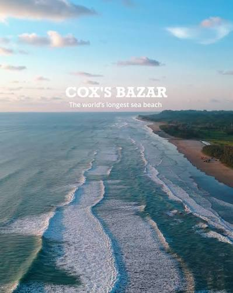
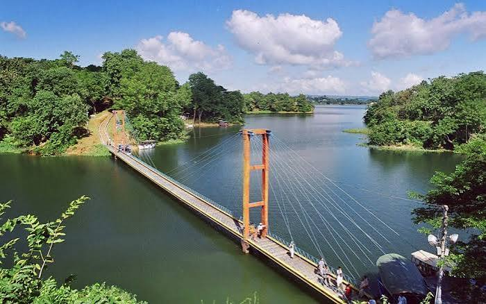

Historical importance
Chattogram’s natural harbour connected Bengal with maritime routes for centuries. The port, historic trading settlements, and the region’s role in the 1971 Liberation War remain important chapters in the national story.
Where hills meet the sea
Coastal horizons, forested hills, island communities, and Bangladesh’s gateway to the world.
Introduction & location
Chattogram Division stretches across the country’s south-east, from the Bay of Bengal coast to the Chittagong Hill Tracts and the borderlands beyond. It contains long beaches, islands, river valleys, and some of Bangladesh’s most varied landscapes.
Chattogram city is the country’s principal seaport and a historic centre of maritime exchange. The region is also home to many distinct communities and languages.
Discover the region

A celebrated Bay of Bengal destination known for its broad sandy shore, fishing communities, and nearby coastal scenery.

Lake and hill landscapes, boat journeys, and the cultural life of the Chittagong Hill Tracts make this area distinctive.

Forest-covered ridges, waterfalls, and hill communities create a dramatic highland setting in the south-east.
Heritage & everyday life
Chattogram’s natural harbour connected Bengal with maritime routes for centuries. The port, historic trading settlements, and the region’s role in the 1971 Liberation War remain important chapters in the national story.
Bengali traditions meet the distinct languages, crafts, foodways, and customs of Indigenous communities in the hill districts. Coastal life, Buddhist heritage, and festivals contribute to the region’s rich cultural mosaic.
Mezbani beef, kala bhuna, dried fish, and fresh seafood are well-known regional favourites. Hill communities also prepare distinctive dishes using local herbs, vegetables, and bamboo shoots.
The seaport, shipping, manufacturing, energy, fisheries, and tourism support livelihoods across the division. Coastal waters, fertile valleys, and forest resources are valuable, and require careful stewardship.
The Karnaphuli, Sangu, Matamuhuri, and Feni rivers run through a landscape of mangroves, coastal mudflats, and hill forests. These habitats support fish, migratory birds, elephants, and many other species.
As the home of the country’s main seaport and a major share of its coastal and hill ecosystems, Chattogram connects Bangladesh to global trade while safeguarding exceptional cultural and natural diversity.